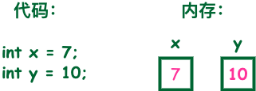

Java 基本データ型
変数は値を格納するためにメモリを確保することです。つまり、変数を作成するときは、メモリに領域を確保する必要があります。
メモリ管理システムは変数の型に基づいて変数にストレージ領域を割り当て、割り当てられた領域はその型のデータを格納するためだけに使用できます。

したがって、異なる型の変数を定義することで、メモリに整数、小数、または文字を格納できます。
Java の2大データ型:
- 組み込みデータ型
- 参照データ型
組み込みデータ型
Java言語は8つの基本型を提供します。6つの数値型（4つの整数型、2つの浮動小数点型）、1つの文字型、そして1つのブール型です。
byte：
- byte データ型は8ビット、符号付きで、2の補数で表される整数です；
- 最小値は-128（-2^7）；
- 最大値は127（2^7-1）；
- デフォルト値は0；
- byte 型は大きな配列でスペースを節約するために使用され、主に整数の代わりとなります。byte 変数が占有するスペースは int 型の4分の1だけだからです；
- 例：byte a = 100、byte b = -50。
short：
- short データ型は16ビット、符号付きの2の補数で表される整数です
- 最小値は-32768（-2^15）；
- 最大値は32767（2^15 - 1）；
- short データ型も byte と同様にスペースを節約できます。short 変数は int 型変数が占有するスペースの2分の1です；
- デフォルト値は0；
- 例：short s = 1000、short r = -20000。
int：
- int データ型は32ビット、符号付きの2の補数で表される整数です；
- 最小値は-2,147,483,648（-2^31）；
- 最大値は2,147,483,647（2^31 - 1）；
- 一般に整数型変数のデフォルトは int 型です；
- デフォルト値は0 ；
- 例：int a = 100000、int b = -200000。
long：
- long データ型は64ビット、符号付きの2の補数で表される整数です；
- 最小値は-9,223,372,036,854,775,808（-2^63）；
- 最大値は9,223,372,036,854,775,807（2^63 -1）；
- この型は主に比較的大きな整数を必要とするシステムで使用されます；
- デフォルト値は0L；
- 例：long a = 100000L，long b = -200000L。
"L"は理論上、大文字と小文字は区別されませんが、"l"と書くと数字の"1"と混同しやすく、区別しにくくなります。そのため、大文字にするのが最善です。
float：
- float データ型は単精度、32ビット、IEEE 754 標準に準拠した浮動小数点数です；
- float は大きな浮動小数点配列を格納する際にメモリ領域を節約できます；
- デフォルト値は0.0f；
- 浮動小数点数は、通貨などの正確な値を表すために使用できません；
- 例：float f1 = 234.5f。
double：
- double データ型は倍精度、64ビット、IEEE 754 標準に準拠した浮動小数点数です；
- 浮動小数点数のデフォルト型は double 型です；
- double 型も同様に、通貨などの正確な値を表すことはできません；
- デフォルト値は0.0d；
-
例：
double d1 = 7D ; double d2 = 7.; double d3 = 8.0; double d4 = 8.D; double d5 = 12.9867;
7 は int リテラルであり、7D、7.、8.0 は double リテラルです。
boolean：
- boolean データ型は1ビットの情報を表します；
- 取り得る値は true と false の2つだけです；
- この型は true/false の状況を記録するためのフラグとしてのみ使用されます；
- デフォルト値はfalse；
- 例：boolean one = true。
char：
- char 型は単一の16ビット Unicode 文字です；
- 最小値は\u0000（10進数相当値は 0）；
- 最大値は\uffff（すなわち 65535）；
- char データ型は任意の文字を格納できます；
- 例：char letter = 'A';。
例
数値型の基本型の値の範囲については、対応するラッパークラスに定数として定義されているため、無理に覚える必要はありません。次の例を見てください：
例
サンプルを実行 »
上記のコードをコンパイルして実行すると、出力結果は次のようになります：
基本类型：byte 二进制位数：8 包装类：java.lang.Byte 最小值：Byte.MIN_VALUE=-128 最大值：Byte.MAX_VALUE=127 基本类型：short 二进制位数：16 包装类：java.lang.Short 最小值：Short.MIN_VALUE=-32768 最大值：Short.MAX_VALUE=32767 基本类型：int 二进制位数：32 包装类：java.lang.Integer 最小值：Integer.MIN_VALUE=-2147483648 最大值：Integer.MAX_VALUE=2147483647 基本类型：long 二进制位数：64 包装类：java.lang.Long 最小值：Long.MIN_VALUE=-9223372036854775808 最大值：Long.MAX_VALUE=9223372036854775807 基本类型：float 二进制位数：32 包装类：java.lang.Float 最小值：Float.MIN_VALUE=1.4E-45 最大值：Float.MAX_VALUE=3.4028235E38 基本类型：double 二进制位数：64 包装类：java.lang.Double 最小值：Double.MIN_VALUE=4.9E-324 最大值：Double.MAX_VALUE=1.7976931348623157E308 基本类型：char 二进制位数：16 包装类：java.lang.Character 最小值：Character.MIN_VALUE=0 最大值：Character.MAX_VALUE=65535
Float と Double の最小値と最大値は科学的記数法で出力されます。末尾の "E+数字" は、Eの前の数字に10の何乗を掛けるかを表します。例えば 3.14E3 は 3.14 × 103=3140、3.14E-3 は 3.14 x 10-3 =0.00314。
実際、JAVAにはもう1つの基本型 void が存在し、それに対応するラッパークラス java.lang.Void もありますが、それらを直接操作することはできません。
型のデフォルト値
次の表に Java の各型のデフォルト値を示します：
| データ型 | デフォルト値 |
|---|---|
| int | 0 |
| long | 0L |
| short | 0 |
| char | '\u0000' |
| byte | 0 |
| float | 0.0f |
| double | 0.0d |
| boolean | false |
| 参照型（クラス、インターフェース、配列） | null |
説明：
int,short,long,byteのデフォルト値は0です。charのデフォルト値は\u0000（空文字）。floatのデフォルト値は0.0f。doubleのデフォルト値は0.0d。booleanのデフォルト値はfalse。- 参照型（クラス、インターフェース、配列）のデフォルト値は
null。
例
サンプルの出力結果は次のとおりです：
Bool :false Byte :0 Character: Double :0.0 Float :0.0 Integer :0 Long :0 Short :0 String :null
参照型
- Javaでは、参照型の変数はC/C++のポインタに非常に似ています。参照型はオブジェクトを指し、オブジェクトを指す変数は参照変数です。これらの変数は宣言時に Employee、Puppy などの特定の型として指定されます。変数は一度宣言されると、型を変更することはできません。
- オブジェクトと配列はどちらも参照データ型です。
- すべての参照型のデフォルト値は null です。
- 参照変数は、それと互換性のある任意の型を参照するために使用できます。
- 例：Site site = new Site("Runoob")。
Java 定数
定数はプログラムの実行中に変更することはできません。
Java では final キーワードを使用して定数を定義します。宣言方法は変数と似ています：
final double PI = 3.1415927;
定数名は小文字でもよいが、識別しやすいように、通常は大文字で定数を表す。
リテラルは任意の組み込み型の変数に代入できます。例：
byte a = 68; char a = 'A'
byte、int、long、shortはすべて、10進数、16進数、8進数で表すことができます。
リテラルを使用するとき、接頭辞0は8進数を表し、接頭辞0xは16進数を表します。例：
int decimal = 100; int octal = 0144; int hexa = 0x64;
他の言語と同様に、Javaの文字列定数も2つの引用符の間に含まれる文字シーケンスです。以下は文字列型リテラルの例です：
"Hello World" "two\nlines" "\"This is in quotes\""
文字列定数と文字変数はどちらも任意のUnicode文字を含むことができます。例：
char a = '\u0001'; String a = "\u0001";
Java言語はいくつかの特別なエスケープ文字シーケンスをサポートしています。
| 記号 | 文字の意味 |
|---|---|
| \n | 改行 (0x0a) |
| \r | 復帰 (0x0d) |
| \f | 改ページ (0x0c) |
| \b | バックスペース (0x08) |
| \0 | ヌル文字 (0x0) |
| \s | スペース (0x20) |
| \t | タブ文字 |
| \" | 二重引用符 |
| \' | 単一引用符 |
| \\ | バックスラッシュ |
| \ddd | 8進数文字 (ddd) |
| \uxxxx | 16進数Unicode文字 (xxxx) |
自動型変換
整数型、実数型（定数）、文字型データは混合演算できます。演算中、異なる型のデータはまず同じ型に変換されてから演算が行われます。
変換は低レベルから高レベルへ行われます。
低 ------------------------------------> 高 byte,short,char—> int —> long—> float —> double
データ型変換は次のルールを満たす必要があります：
1. boolean型に対して型変換を行うことはできません。
-
2. オブジェクト型を無関係なクラスのオブジェクトに変換することはできません。
-
3. 容量の大きい型を容量の小さい型に変換する場合は、必ず強制型変換を使用しなければなりません。
-
4. 変換中にオーバーフローや精度の損失が発生する可能性があります。例：
int i =128; byte b = (byte)i;
byte型は8ビットで最大値が127のため、intをbyte型に強制変換すると、値が128の場合にオーバーフローが発生します。
-
5. 浮動小数点数から整数への変換は、四捨五入ではなく小数を切り捨てることによって行われます。例：
(int)23.7 == 23; (int)-45.89f == -45
自動型変換
変換前のデータ型のビット数が変換後のデータ型より低くなければなりません。例：shortデータ型のビット数は16ビットなので、ビット数が32のint型に自動変換できます。同様にfloatデータ型のビット数は32なので、64ビットのdouble型に自動変換できます。
例
実行結果は次のとおりです:
char自动类型转换为int后的值等于97 char类型和int计算后的值等于66
解説：c1の値は文字aであり、ASCIIコード表を調べると対応するint型の値は97、Aに対応する値は65であることがわかるため、i2=65+1=66。
強制型変換
1. 条件は、変換するデータ型が互換性を持っていることです。
2. 形式：(type)value typeは強制型変換後のデータ型です 例：
例
public class ForceTransform { public static void main(String[] args){ int i1 = 123; byte b = (byte)i1;//byteへの強制型変換 System.out.println("intをbyteに強制型変換した後の値は次と等しい"+b); } }実行結果：
int强制类型转换为byte后的值等于123
暗黙の強制型変換
1. 整数のデフォルト型はintです。
2. 小数のデフォルトはdouble型の浮動小数点型です。float型を定義するときは、数字の後にFまたはfを付けなければなりません。
この節ではJavaの基本データ型について説明しました。次の節では、さまざまな変数型とその使い方について説明します。
その他の拡張
大白兔
ali***990@foxmail.com
参考URL
次のエラーメッセージが表示されます：
オーバーフローしました~
解決方法は数値の後にL：
大白兔
ali***990@foxmail.com
参考URL
LadyLeane
q-b***sn.com
参照型はオブジェクト型であり、その値はメモリ空間を指す参照、つまりアドレスです。指し示すメモリには、変数が表す1つの値または一連の値が保存されています。
参照型はそうではなく、変数には参照空間だけが割り当てられ、データ空間は割り当てられません。データが何であるか分からないからです。
誤った例：
参照型変数は宣言後、インスタンス化によってデータ空間を確保して初めて、変数が指すオブジェクトにアクセスできます。
参照変数の代入：
LadyLeane
q-b***sn.com
月汐
bul***nitian@163.com
参考URL
では a+b は何型ですか？
答え：Javaの世界では、int型より小さい型で演算を行う場合、Javaはコンパイル時にそれらを一律にint型へ強制変換します。int型より大きい型で演算を行う場合は、それらの中で最も大きい型に自動変換されます。
月汐
bul***nitian@163.com
参考URL
啦啦啦bbb
115***8234@qq.com
char a = 'S';charに代入するときは単一引用符を使います。文字型データ型だからです
String a = "I AM FINE";Stringに代入するときは二重引用符を使います。文字列データ型だからです
啦啦啦bbb
115***8234@qq.com
CHENG
159***3536@qq.com
データ型変換の補足
1. ラッパークラスによる型変換
一般的に、まず変数を宣言し、次に対応するラッパークラスを生成すれば、ラッパークラスのさまざまなメソッドを利用して型変換を行うことができます。例：
float型をdouble型に変換したい場合：
基本型の変数を対応するラッパークラスに変換するには、ラッパークラスのコンストラクタを利用できます。すなわち、Boolean(boolean value)、Character(char value)、Integer(int value)、Long(long value)、Float(float value)、Double(double value)
また、各ラッパークラスには、対応する基本型データを取得するための××Value()という形式のメソッドがあります。このメソッドを利用すると、異なる数値型変数間の変換も実現できます。例えば、double型クラスでは、intValue()で対応する整数型変数を取得でき、doubleValue()で対応するdouble型変数を取得できます。
2. 文字列と他の型との間の変換
他の型から文字列への変換
3. 値を表す文字列を他の型に変換する
1. まず対応するラッパーインスタンスに変換し、次に対応するメソッドを呼び出して他の型に変換します
例えば、文字列"32.1"をdouble型の値に変換する形式は:new Float("32.1").doubleValue()です。また、Double.valueOf("32.1").doubleValue()も使用できます。
2. 静的parseXXXメソッド
3. CharacterのgetNumericValue(char ch)メソッド
4. Dateクラスと他のデータ型の相互変換
整数型とDateクラスの間には直接的な対応関係はありませんが、int型を使って年、月、日、時、分、秒をそれぞれ表すことで、両者の間に対応関係を構築できます。この変換を行う場合、Dateクラスのコンストラクタの3つの形式を使用できます：
long型とDateクラスの間には非常に興味深い対応関係があります。それは、ある時点をグリニッジ標準時1970年1月1日0時0分0秒からのミリ秒数として表すことです。この対応関係に対して、Dateクラスにも対応するコンストラクタがあります：Date(long date)
Dateクラスの年、月、日、時、分、秒および曜日を取得するには、DateクラスのgetYear()、getMonth()、getDate()、getHours()、getMinutes()、getSeconds()、getDay()メソッドを使用できます。これは、Dateクラスをintに変換すると理解しても構いません。
一方、DateクラスのgetTime()メソッドで、前述の時間に対応するlong型の整数を取得できます。ラッパークラスと同様に、DateクラスにもtoString()メソッドがあり、これをStringクラスに変換できます。
Dateを特定の形式（例：20020324）で取得したい場合があります。以下の方法を使用できます。まずファイルの先頭でインポートします：
import java.text.SimpleDateFormat; java.util.Date date = new java.util.Date(); //如果希望得到YYYYMMDD的格式 SimpleDateFormat sy1=new SimpleDateFormat("yyyyMMdd"); String dateFormat=sy1.format(date); //如果希望分开得到年，月，日 SimpleDateFormat sy=new SimpleDateFormat("yyyy"); SimpleDateFormat sm=new SimpleDateFormat("MM"); SimpleDateFormat sd=new SimpleDateFormat("dd"); String syear=sy.format(date); String smon=sm.format(date); String sday=sd.format(date);まとめ：
1、boolean だけがデータ型の変換に関与しません
2、自動型変換：
3、強制型変換：目標となる型を丸括弧で囲み、変数の前に置きます
CHENG
159***3536@qq.com
程序猿
591***987@qq.com
Java では、任意の文字型と文字列を加算すると、結果はすべて連結になります。
理由：まず String.valueOf を適用して s の value 値を取得し、その後 StringBuilder によって hello を連結するため、value と hello が連結されます。
String s = null; s = (new StringBuilder(String.valueOf(s))).append("hello").toString(); System.out.println(s);程序猿
591***987@qq.com
兔2
yum***126@126.com
ラッパークラス Integer の自動ボックス化
int 型を Integer クラスに代入すると、自動ボックス化され、Integer の valueOf(int i) メソッドが呼び出されます。
/** * Returns an {@code Integer} instance representing the specified * {@code int} value. If a new {@code Integer} instance is not * required, this method should generally be used in preference to * the constructor {@link #Integer(int)}, as this method is likely * to yield significantly better space and time performance by * caching frequently requested values. * * This method will always cache values in the range -128 to 127, * inclusive, and may cache other values outside of this range. * * @param i an {@code int} value. * @return an {@code Integer} instance representing {@code i}. * @since 1.5 */ public static Integer valueOf(int i) { assert IntegerCache.high >= 127; if (i >= IntegerCache.low && i <= IntegerCache.high) return IntegerCache.cache[i + (-IntegerCache.low)]; return new Integer(i); }i >= -128 && i <= 127 の場合、Integer.valueOf(i) は i を内部クラス IntegerCache の static final Integer cache[] に格納します。このバイト範囲のキャッシュメモリアドレスは静的であり、戻り値は次のとおりです。
したがって：
a と b の参照はどちらも同じオブジェクトを指します。すなわちa == b。
兔2
yum***126@126.com
flaming
248***1347@qq.com
参考URL
プリミティブ型：boolean，char，byte，short，int，long，float，double。
ラッパー型：Boolean，Character，Byte，Short，Integer，Long，Float，Double。
Java の基本データ型は上記の 8 つだけであり、基本型（primitive type）以外はすべて参照型（reference type）です。
flaming
248***1347@qq.com
参考URL
路人
758***817@qq.com
byte データ型は8ビットの符号付き整数で、2の補数で表されます；
short データ型は16ビットの符号付き整数で、2の補数で表されます；
int データ型は32ビットの符号付き整数で、2の補数で表されます；
long データ型は64ビットの符号付き整数で、2の補数で表されます；
float データ型は単精度、32ビット、IEEE 754標準に準拠した浮動小数点数です；
double データ型は倍精度、64ビット、IEEE 754標準に準拠した浮動小数点数です；
boolean データ型は1ビットの情報を表します；
char 型は単一の16ビット Unicode 文字です；
路人
758***817@qq.com
嬴斯
207***3769@qq.com
返信@大白兔提起された質問についてですが、Java ではデフォルトで小数部分を含む数値は double 型です。そのため、小数部分を含む定数を float 型の変数に代入する場合、定数の後ろに「f」「F」を記述する必要があり、システムはそれを float 型の値として認識します。
一方、整数型 long を使用する場合に「l」または「L」を書くタイミングは、入力する定数値が int 型の格納限界よりも大きいかどうかで判断します。int 型の格納限界より大きい場合は接尾辞を書く必要があります。
嬴斯
207***3769@qq.com
乐嘻嘻
bri***q.com
返信@CHENGCharacter の getNumericValue(char ch) メソッドは、ドキュメントでは次のように指定されています。
指定された Unicode 文字が表す
int值アルファベット A-Z の大文字（
'\u0041'到'\u005A'）、小文字（'\u0061'到'\u007A'）、および全角変種（'\uFF21'到'\uFF3A'和'\uFF41'到'\uFF5A'）形式は 10 から 35 の数値を持ちます。これは Unicode 仕様とは独立しています。Unicode 仕様はこれらのchar値に数値を割り当てていません。36進数とみなすことができます。1-9_A-Z において A=10、Z=25 であり、文字に対応する数値を比較的簡単に取得できます。
文字に数値がない場合は -1 を返します。文字に数値はあるが、非負整数として表せない場合（例：小数値）は -2 を返します。
乐嘻嘻
bri***q.com